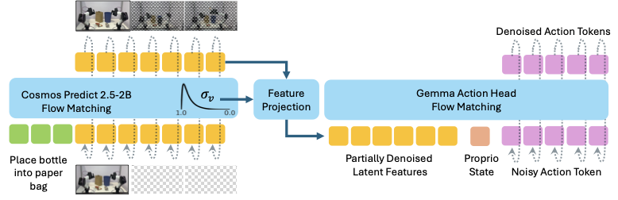
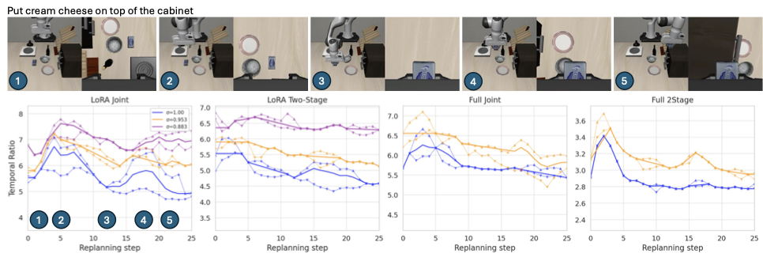
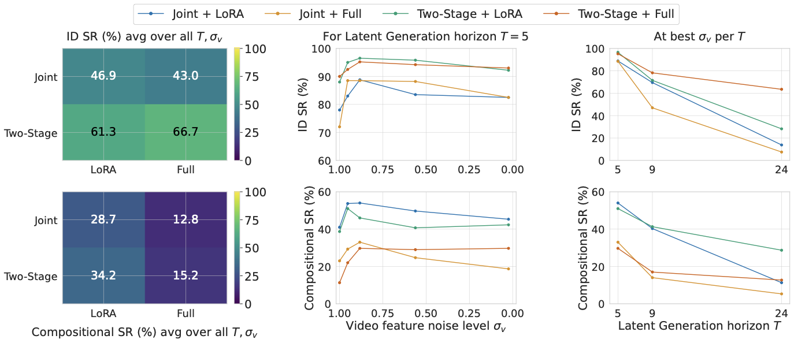
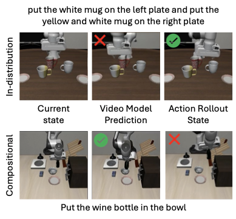
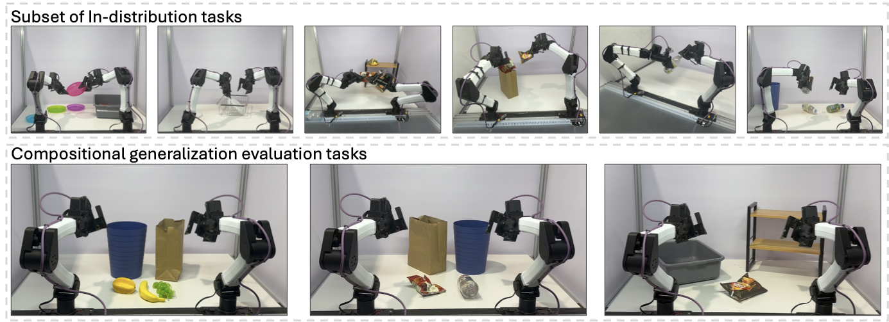
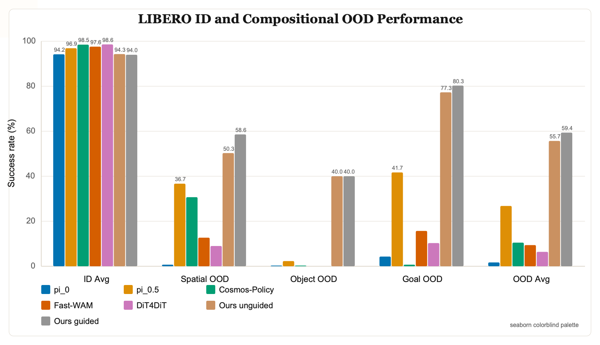
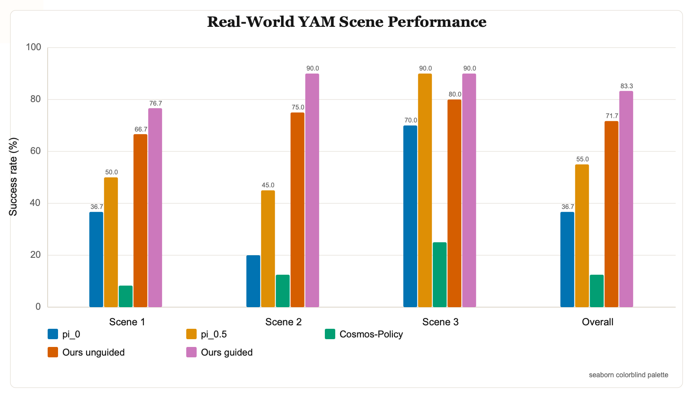

Generative video foundation models exhibit strong compositional priors, yet world-action models (WAMs) and video-action models (VAMs) often lose these priors after finetuning on robotic action data. We refer to this discrepancy as the video-action generalization gap. We systematically investigate this gap by evaluating a broad VAM design space, then introduce the Temporal Ratio (TR), an attention-based diagnostic that measures how strongly the action head relies on future latent rollouts relative to the anchored current frame. TR predicts compositional generalization capacity and varies naturally with task phase: it rises during planning and falls during precise manipulation. Based on these findings, we propose TR-Adaptive Guidance, an inference-time method that amplifies compositional video conditioning when the policy relies on future rollouts. On LIBERO and real-world bimanual tasks, this improves compositional OOD performance while preserving ID precision.
Anonymous Submission
Understanding and Mitigating the
Video-Action Generalization Gap via Temporal Ratio
We study VAMs that feed partially denoised latent video features into a flow-matching action head. The central question is when the action head uses a generated future as a plan, rather than falling back to the clean current-frame anchor. TR exposes this routing behavior directly from attention, turning a noisy design sweep into a measurable operating regime.

Absolute success rates across backbone adaptation, video noise level, and prediction horizon form a fragmented landscape. TR provides a more mechanistic view: it measures whether future-predictive video features are actually routed into action generation.
At each replan step, the action tokens attend over current-frame video tokens and predicted future video tokens. TR is the ratio of action attention assigned to future frames over the attention assigned to the current frame. We use it both as a diagnostic and as a runtime signal for adaptive guidance.

We vary adaptation strategy, video feature noise level, and temporal horizon. LoRA tends to preserve more pretrained temporal structure than full finetuning; intermediate video noise levels are strongest; and longer rollouts improve video-level plans without always improving action success.

A correct generated future is useful only when the action policy follows it. Conversely, an incorrect generated future may be harmless if the action head anchors to the present observation.

The real-world YAM evaluation tests object-goal binding under multiple target and receptacle candidates. The same TR signal used in simulation is used to amplify planning-time video conditioning on the robot.

The plots below summarize per-suite LIBERO and real-world performance using a seaborn colorblind palette and the same restrained visual treatment as the rest of the page.


@inproceedings{anonymous2026temporalratio,
title={Understanding and Mitigating the Video-Action Generalization Gap via Temporal Ratio},
author={Anonymous},
booktitle={Conference on Robot Learning},
year={2026}
}